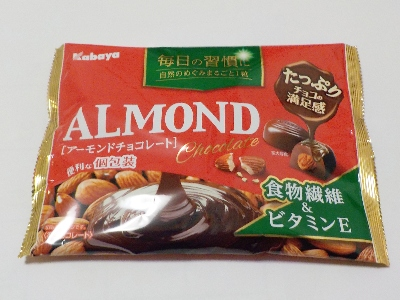
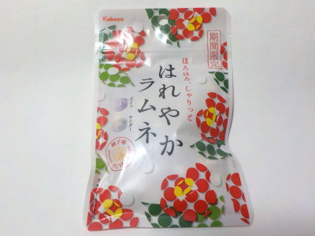
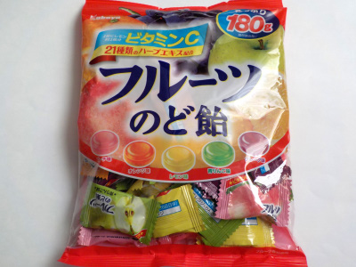

岡山市北区御津野々口1100番地
更新日 : 2026/04/08

個包装のチョコレート買ったら習慣的に食べちゃうんだろうな。甘いもの食べ過ぎになる気がするな。1回一粒で収まらないんだろうな。だから買うのはやめよう。
お腹が空いた時はナッツがオススメ、チョコレートがオススメって聞くな。だから買ってもいいな。
色々迷って買っています。
食べると美味しいので後悔しませんね。でも買い過ぎには注意しようと思います。
2026/03/10 109g 213円で購入。
2026/04/08 同じパーケージでドラッグストアコスモス専売商品は124g298円でした。
更新日 : 2023/06/05

今回の期間限定はユズ味です。
私は柚子を砂糖で甘くして食べることないので、ちょっと違和感がありました。柚子ジュースとか柚子酒を飲んでる人は抵抗がないんでしょうね。
甘い柚子も美味しいので、柚子の砂糖漬けでも作って食べようかなと思いました。
更新日 : 2023/06/01

内容量180グラムと多いですが、お値段がお手頃なのでとても買いやすい商品です。
21種類のハーブ入りってあると複雑な味がしそうで嫌な感じがしますが、ハーブ感はなく美味しかったです。
昔からあるような果物系のジュース味だと思いました。
【おいしいものを食べよう。】【たくさん寝よう。】
【ソロ活をしよう!】【季節感のあることをしよう。】【動画視聴はほどほどに。】【当サイトの全てのコンテンツは無断転載禁止です。】